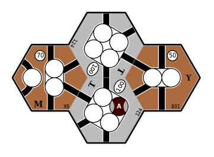
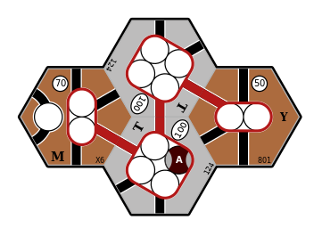
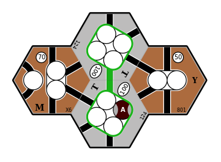
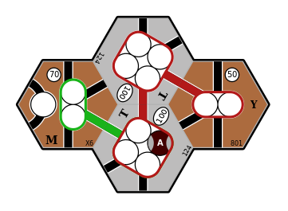

Identifying optimal routes
TODO: define the terms “path” and “route”.
We divide the process of identifying the optimal routes for a company to operate into the following steps:
-
Identify all routes available to the company;
-
Constructing routes from each placed token.
-
Paths as a sequence of
n18tile::Connectionvalues:Track,Dit,City,Face. -
The need to represent all of the track segments, in addition to mere connectivity between dits and cities.
-
Use of
Faceandn18map::Map::adjacent_faceso that we can divide connectivity into two concerns: within-tile connectivity as provided byn18tile::Tile::connections, and between-tile connectivity as provided byMap.
-
-
Joining routes together to form new routes.
-
Constraints on, e.g., the number of stops.
-
Can be extended to consider hex trains.
-
“Flood” trains (description) can also be handled, although this requires a depth-first search that records cities and dits, rather than paths. Pick one placed station and sum every revenue centre that can be reached with no path limit and the ability to reuse track segments.
-
-
Identify all valid combinations of available routes;
- No track segments in common.
-
Identify all valid pairings of trains to routes; and
- Number of stops, number of hexes, etc.
-
Identify the optimal pairing of trains to routes.
-
Express trains: where to stop?
-
Route bonuses.
-
We now describe each of these steps in turn.
TODO: include diagrams to illustrate each step. Show, e.g.,:
-
Multiple (conflicting and non-conflicting) routes starting from a single token;
-
Joining paths;
-
Path combinations;
-
Multiple routes along the same path due to different skips/stops.
-
Here is an example where the optimal routes for a pair of trains involves sub-optimal routes for each train:
Map Description  Four connected cities  8-train: optimal revenue is $320  2+2-train: optimal revenue is $400  Both trains: optimal revenue is $590
Identifying all available routes
We assume that all routes operated by a company must pass through a city that contains one of the company’s token.
-
We first define the route limits, such as maximum number of stops, if any.
-
We then loop over all of the company’s placed tokens and, for each placed token, construct all valid paths that start at this token.
-
To allow for paths that pass through a placed token, we form new paths by joining pairs of paths that both start at the same placed token, subject to the following constraints:
-
The two paths being joined do not have any conflicts (i.e., they don’t have any elements in common except for the placed token); and
-
The combined path respects constraints on length, number of stops, etc.
-
-
To avoid duplicating paths that pass through more than one of the company’s placed tokens, we:
-
Define an ordering on token spaces across the entire map, by representing each token space as a
(HexAddress, usize)tuple, whereHexAddressimplementsOrdand theusizeelement is the index of the token space on its tile. -
When constructing paths that start at a placed token, we stop searching when another of the company’s placed tokens is reached and according to the
(HexAddress, usize)ordering this encountered token comes before (i.e., is less than) the starting token.
This ensures that any connection between two of the company’s placed tokens is only explored in a single (arbitrary, but consistent) direction.
Note that this is sufficient to identify all valid paths. Each valid path will reach (or pass through) at least one placed token and, of these tokens, one will be the “minimum” token according to the
(HexAddress, usize)ordering. This path will then be constructed by steps 2 and 3, above, when starting from this “minimum” token. -
-
If the company owns any trains that can skip over towns and/or cities, we consider paths of arbitrary length, with the restriction that any train that operates this route:
-
Must stop at the first and last revenue centres; and
-
May skip over revenue centres in the middle of the route.
Note that in this case, a single path represents multiple routes that traverse the same path, but where the train stops at a different subset of the available revenue centres.
-
Identifying all valid combinations of routes
We need to consider all \(k\)-combinations of routes where there is at least one route, but no more routes than the number of trains owned by the company. That is, for a company that owns \(T\) trains, we need to consider all \(k\)-combinations for each \(k: 1 \le k \le T \).
We also want to ignore any combination of routes where any of the routes conflict with each other (e.g., by using the same track segment). Note that by exploring all valid combinations, we ignore the order in which routes are combined.
This is implemented by n18route::comb::CombinationsFilter, which internally
iterates over all route combinations and skips over combinations where any of
the routes conflict with each other.
Identifying all valid pairings of trains to routes
We assume that the revenue earned from operating a route only depends on the
train type.
For example, if a company owns two 2 trains we do not need to consider the
order in which they are paired with routes, because the results will be
identical.
But for a given combination of routes — in which the routes will
necessarily be listed in a specific order — the order in which we
allocate train types to these routes matters.
For example, if there are two routes that visit exactly two cities and the
company owns a 2 train and a 2+2 train, the net revenue will be higher
if the 2+2 train operates the route that earns the greatest revenue.
So for a given (ordered) combination of \(R\) routes we need to explore all of the \(R\)-permutations of the company’s trains that are unique in their ordering of train types.
This is implemented by n18route::perm::KPermutationsFilter, which internally
iterates over all train k-permutations and skips over permutations that
don’t change the ordering of train types.
Identifying the optimal combination of routes
Once we have collected all of the possible paths for a company, we need to find the allocation of company trains to routes that yields the greatest revenue. There are a number of complications to consider:
-
For a given set of routes, the revenue may depend on how we allocate these routes to the company’s trains. For example, if there are two routes that visit exactly two cities and the company owns a
2train and a2+2train, the2+2train should run on the route that earns the greatest revenue. -
We need to consider operating fewer routes than the company has trains.
-
For express trains, we must consider routes of all possible lengths, and determine the combination of visiting and skipping cities along each route that earns the greatest revenue.
-
So for an express train that can make up to
Nstops, it must stop at the first and last stops on the path, and up toN - 2stops anywhere else along the path. -
Note that route bonuses may affect which of the
N - 2stops earn the most revenue, so we need to evaluate every combination of stopping at, or skipping over, each revenue centre (except for the first and last centres, where the train must stop).
-
-
Routes may earn bonus revenue from a variety of sources, such as:
-
By owning private companies that provide bonus revenue when visiting a specific location.
-
By visiting a specific combination of cities. For example, in 1867 the city of Timmins normally earns $40, but if the route also includes at least one of Toronto, Montréal, or Québec, its revenue is doubled ($80).
These bonuses are game-specific and context-dependent. The supported bonus types are defined by the
n18route::bonus::Bonusenum. -
TODO: haven’t described all steps of the algorithm ...